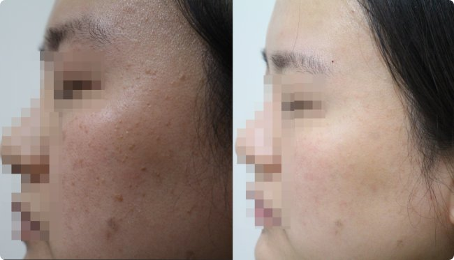
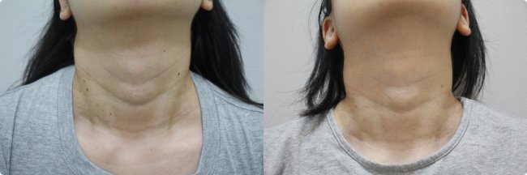

편평사마귀는 발생 부위에 따라 치료 전후 변화가 다르게 나타납니다.
전주편평사마귀 치료를 고민하시는 분들이 가장 궁금해하시는 부분이 바로 "실제로 얼마나 좋아지나요?"인데요, 오늘은 저희 전주점에서 진행한 얼굴 케이스와 목 케이스 두 건을 실제 사진과 함께 정리해드리겠습니다.
안녕하세요, 후한의원 전주점 허정위 대표원장입니다.
편평사마귀는 왜 자꾸 번지고 재발하나요
편평사마귀는 HPV 바이러스에 의한 표피 증식성 병변으로, 좁쌀 크기의 편평한 병변이 접촉이나 자가 접종을 통해 주변 피부로 번지는 특성이 있습니다.
단순히 눈에 보이는 병변만 제거하면 주변에 남아 있는 미세 병변이나 잠복된 바이러스로 인해 재발하는 경우가 많아요.
그래서 저희는 코트라 CO2레이저로 병변을 정밀하게 제거하는 동시에, 침치료를 병행해 면역력과 재생력을 함께 끌어올리는 방식으로 접근하고 있습니다.
일반 CO2레이저와 달리 코트라 CO2레이저는 병변 깊이와 크기에 맞춰 출력을 세밀하게 조절할 수 있어, 정상 피부 손상을 최소화하면서 병변만 선택적으로 제거하는 데 유리합니다.
케이스 1. 눈가~볼 부위 편평사마귀

눈가에서 볼로 이어지는 라인을 따라 자잘한 편평사마귀 병변이 흩어져 있던 케이스입니다.
병변이 눈 주변에 가깝게 위치해 있어 레이저 출력과 각도 조절에 특히 신경 써야 했던 부위였는데요, 병변 크기와 깊이를 개별적으로 확인한 뒤 코트라 CO2레이저로 하나씩 정밀 제거하고, 재생 촉진을 위한 침치료를 함께 진행했습니다.
치료 후 사진을 보면 눈가~볼 라인의 병변이 정리되면서 피부결이 한층 매끈해진 것을 확인할 수 있습니다.
케이스 2. 목 부위 편평사마귀

목 앞쪽에 크고 작은 편평사마귀 병변이 여러 개 분포해 있던 케이스입니다.
목 피부는 얼굴보다 얇고 예민한 편이라 레이저 출력을 더 보수적으로 설정하고, 병변 개수가 많은 만큼 여러 차례에 걸쳐 나누어 제거하는 방식으로 진행했습니다.
치료 후 사진에서는 목 라인을 따라 도드라져 보이던 병변들이 정리되면서 목선이 한결 깔끔해진 것을 확인하실 수 있습니다.
두 케이스에서 확인할 수 있는 공통점
부위와 상관없이 병변 크기와 깊이에 맞춘 레이저 출력 조절, 그리고 재발 방지를 위한 침치료 병행이라는 원칙은 동일하게 적용됩니다.
다만 실제 치료 횟수와 회복 기간은 병변의 개수, 크기, 피부 부위의 특성에 따라 개인차가 있다는 점은 참고해주시면 좋겠습니다.
치료 후 관리에서 신경 써야 할 부분
- 치료 부위는 자외선에 노출되면 색소침착이 생길 수 있어 충분한 자외선 차단이 필요합니다.
- 병변이 남아 있는 주변 부위를 손으로 만지거나 긁는 습관은 자가 접종으로 이어질 수 있어 피하시는 게 좋습니다.
자주 묻는 질문
Q. 편평사마귀는 한 번 치료로 끝나나요?
A. 병변 개수와 크기에 따라 다르지만, 재발 방지를 위해 여러 차례에 걸쳐 치료하는 경우가 많습니다.
Q. 얼굴과 목 중 치료가 더 어려운 부위가 있나요?
A. 얼굴은 눈 주변처럼 예민한 부위의 각도 조절이, 목은 피부가 얇아 출력 조절이 각각 중요해서 부위별로 접근 방식을 다르게 설계합니다.
Q. 치료 후 흉터가 남을 수도 있나요?
A. 코트라 CO2레이저는 병변만 선택적으로 제거하도록 설계되어 있어 일반 레이저 대비 흉터 위험이 낮은 편이나, 개인 피부 상태에 따라 상담을 통해 안내해드리고 있습니다.
위 사진은 본인 동의 하에 게재된 실제 치료 사례이며, 결과는 개인의 피부 상태와 병변 정도에 따라 차이가 있을 수 있습니다.
궁금하신 부분 있으시면 편하게 상담 문의 주세요.
후한의원 전주점 | 전북 전주시 완산구 온고을로 20 더즌빌딩 2층 | 063-251-1050